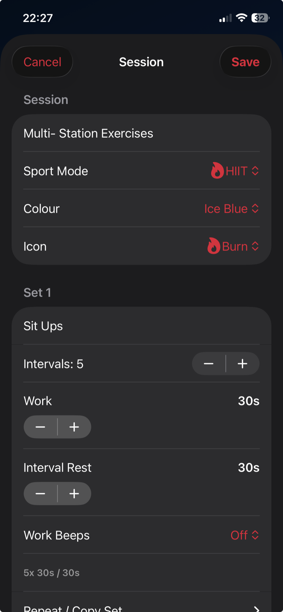

Plan and run the work
Turn a coaching plan into a session athletes can follow.
Build a workout from named sets, each with its own repetitions, work time, recovery time and set rest. Save the structure for repeat use.
A large countdown and clear phases make instructions readable at a glance. Audible beats hold a rhythm or prompt a change of pace, while progress tracks the current set and whole session.
- Mix several work and recovery patterns
- Change beat guidance live
- Record effort, notes and heart-rate context